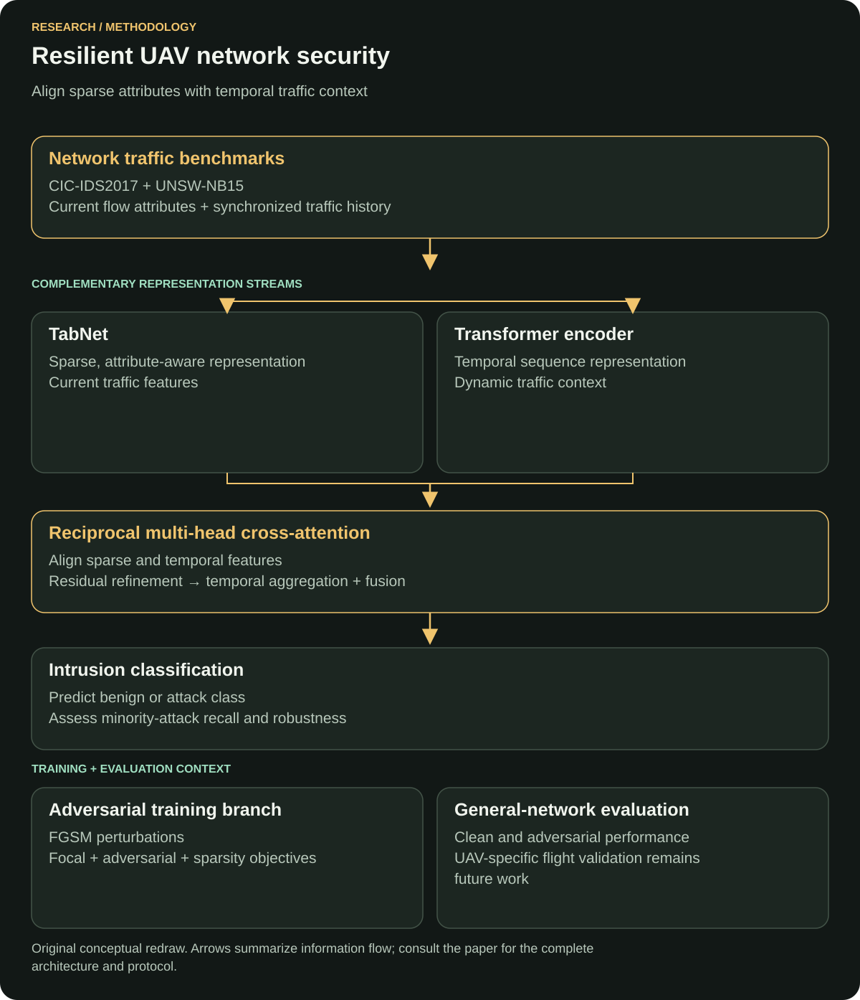

Adversarial machine learning · Network security
Resilient UAV Network Security: Cross-Attentive Alignment of Sparse and Temporal Features for Adversarial Intrusion Detection
A hybrid intrusion detector brings sparse network attributes and temporal traffic context together through cross-attention. This publication studies adversarial robustness and minority-attack detection.
Case study updated
Read the original paperProblem
The paper targets three interacting problems: heterogeneous network features, adversarial evasion and rare attack classes. An observation can contain useful sparse attributes while the surrounding sequence supplies different context. Source: publisher introduction.
Why important
UAV communication networks support tasks such as surveillance, logistics and emergency response, while open wireless links expose them to disruption and intrusion. The paper focuses on a detector that can combine sparse traffic attributes with changing temporal behavior under adversarial pressure. Source: publisher introduction.
Rare attacks are especially important: high average accuracy can coexist with missed minority cases. The task therefore requires class-wise detection analysis, robustness testing and a resource budget suited to edge operation.
Dataset
The study evaluates CIC-IDS2017 and UNSW-NB15, two general-purpose intrusion benchmarks. Source: publisher introduction.
- CIC-IDS2017: its official documentation describes labeled network flows with benign activity and attacks including Botnet, DoS, DDoS and web attacks.
- UNSW-NB15: its official documentation describes normal activity and synthetic attack behavior generated in a cyber range.
Protocol details requiring the full methods: selected record counts, split rules, feature preprocessing and sequence-window length. The UAV-specific coverage gap is discussed below.
Method / model
TabNet processes current attributes; a Transformer processes synchronized history. Bidirectional multi-head cross-attention exchanges their representations, followed by residual refinement, temporal aggregation and fusion. Training includes FGSM perturbations. Source: publisher method description.


Why that model
My interpretation of the design: TabNet selects useful attributes from the current observation, while the Transformer supplies context from the traffic history. Cross-attention makes those representations interact: a sparse attribute can be interpreted in relation to the sequence in which it appears.
That alignment is the paper's alternative to simple feature concatenation. FGSM-based training addresses a separate concern—how the decision changes when the input is perturbed. The original TabNet paper provides background on its step-wise feature selection.
Loss function
The joint objective combines focal classification loss, adversarial loss and TabNet sparsity regularization. Source: publisher optimization summary.
Focal loss reduces the influence of easy examples so harder cases receive more attention. The adversarial component trains with perturbed inputs, while the sparsity component supports selective feature use. The original adversarial-examples paper explains the perturbation-training background.
Exact term weights, focal parameters, the objective equation and the perturbation budget require the full methods.
Evaluation metrics
The evaluation discusses aggregate and class-wise detection, adversarial resilience and model footprint. Source: publisher experimental overview.
- Recall
- The proportion of true examples of a class that the detector recovers. It is useful for discussing missed minority attacks.
- Precision and F1
- Precision describes how often a class prediction is correct; F1 combines precision and recall. Higher recall should be interpreted together with false alarms.
- Resource measurements
- A stored model size and an end-to-end runtime measurement answer different deployment questions. A footprint alone cannot establish throughput, peak memory or energy use.
Definitions: classification-metrics reference.
Baseline
The paper reports comparisons with standalone baselines to assess the hybrid framework's detection and robustness gains. Source: publisher abstract.
The complete comparison table is needed for the baseline roster, training settings, class-wise scores and the denominator behind the reported Botnet recall improvement.
Results
- Accuracy · CIC-IDS2017
- 99.47%
- Accuracy · UNSW-NB15
- 98.24%
- Reported Botnet recall improvement
- 33.07%
- Reported model footprint
- 0.37–1.24 MB
The publication reports these results. The 33.07% figure is its reported recall improvement over standalone baselines; it is retained in those terms.
My exact contribution
I worked on implementation and experiments as a co-author.
The published CRediT statement also credits me with methodology, formal analysis, validation, and writing review and editing. Source: publisher contribution statement.
Limitations
UAV-domain validation: CIC-IDS2017 and UNSW-NB15 do not directly cover MAVLink attacks, GPS spoofing, jamming or blackhole attacks. The paper identifies this gap. Dedicated UAV traffic is needed to test the intended application.
Threat-model coverage: robustness depends on the attack construction, perturbation budget and whether the modified features correspond to feasible traffic changes. Evaluation under one construction leaves other attack capabilities open.
Operational evidence: sequence boundaries and split rules need a reproducibility audit. Model footprint also needs to be complemented by measured latency, peak memory, energy use and false alarms on the intended hardware and traffic.
What I would improve now
Proposed extensions:
- Publish the reproducibility package: include selected records, split manifests, sequence boundaries, exact loss, attack settings, seeds and baseline configurations.
- Isolate the architectural gains: compare single branches, simple concatenation, cross-attention and adversarial training under the same split and tuning budget.
- Validate the intended domain: evaluate authorized UAV-specific traffic and protocol-relevant scenarios separately from general intrusion benchmarks.
- Expand robustness testing: compare additional attacks under stated capabilities and feasible feature constraints, alongside clean-data performance.
- Test deployment end to end: measure preprocessing, peak memory, latency, throughput and energy on the intended edge hardware.
- Design for an operator: report class-wise confidence and false alarms, explain relevant features and define when a finding requires analyst review.
Publication and primary sources
Vehicular Communications, 2026, Article 101094; available online 28 October 2026.
- Original publication and DOI: 10.1016/j.vehcom.2026.101094
- Publisher abstract, introduction, limitations and CRediT statement
- CIC-IDS2017: original dataset documentation
- UNSW-NB15: original dataset documentation
- TabNet: original architecture paper
- Focal loss: original method paper
- Adversarial examples: original method paper
Source coverage checked 9 November 2026: publisher abstract, indexed introduction, experimental overview and CRediT statement. The complete methods and results tables remain unavailable; background papers explain the individual components.
Related engineering work
← All research publications · Discuss research or AI engineering